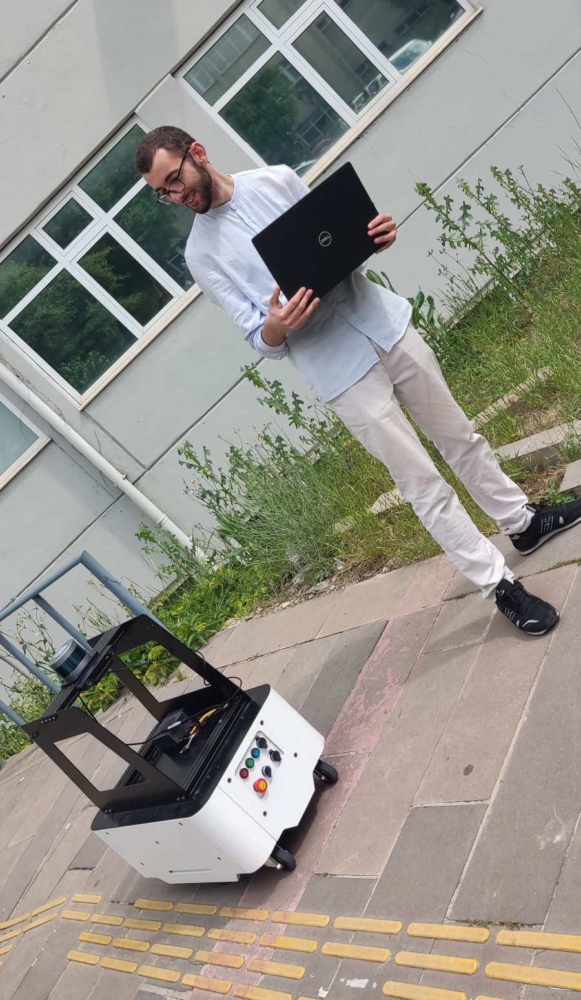
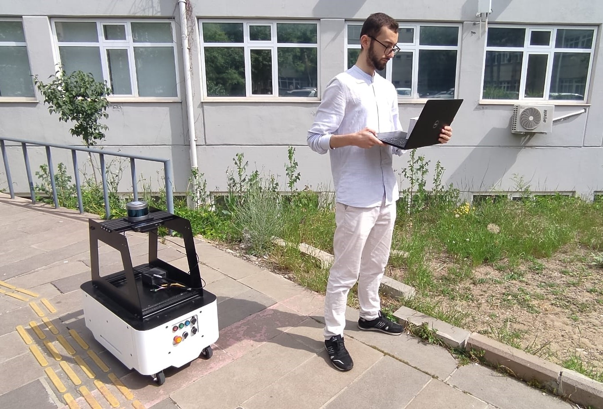
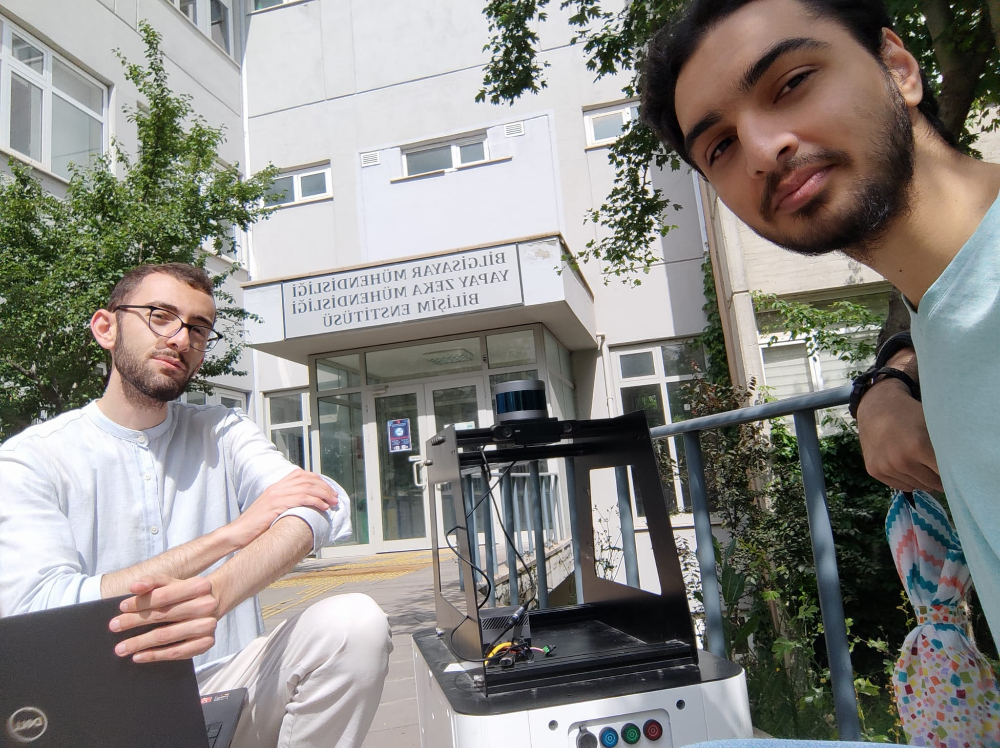
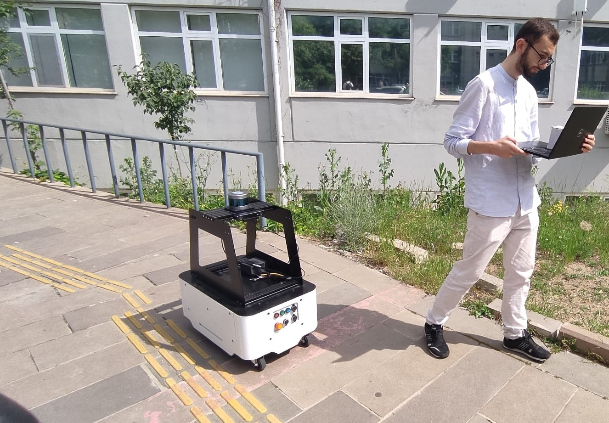
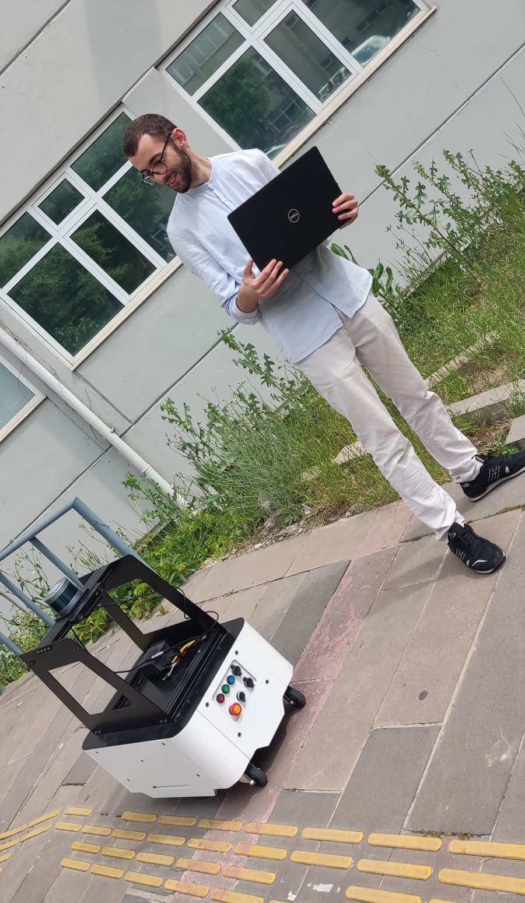
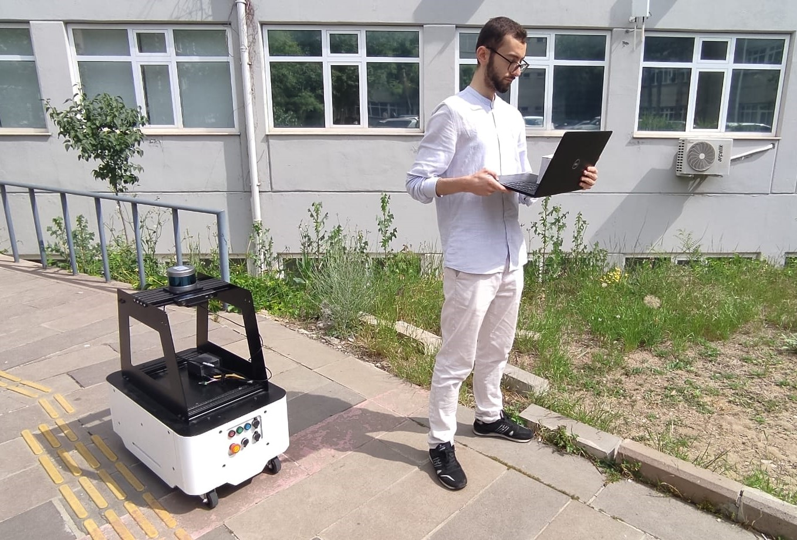
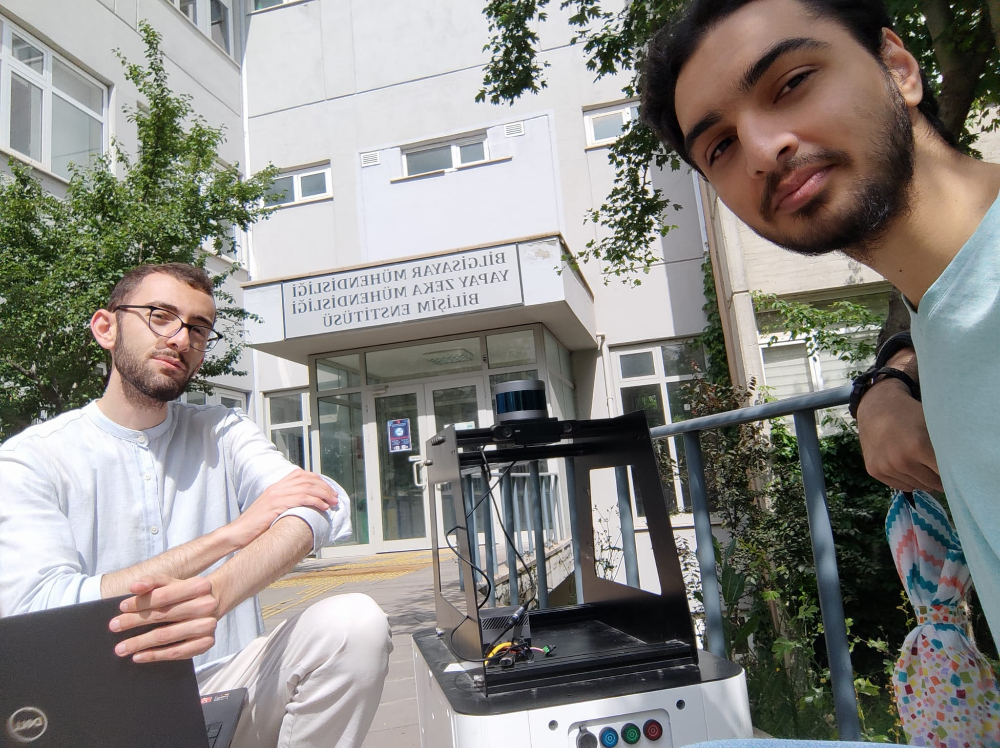
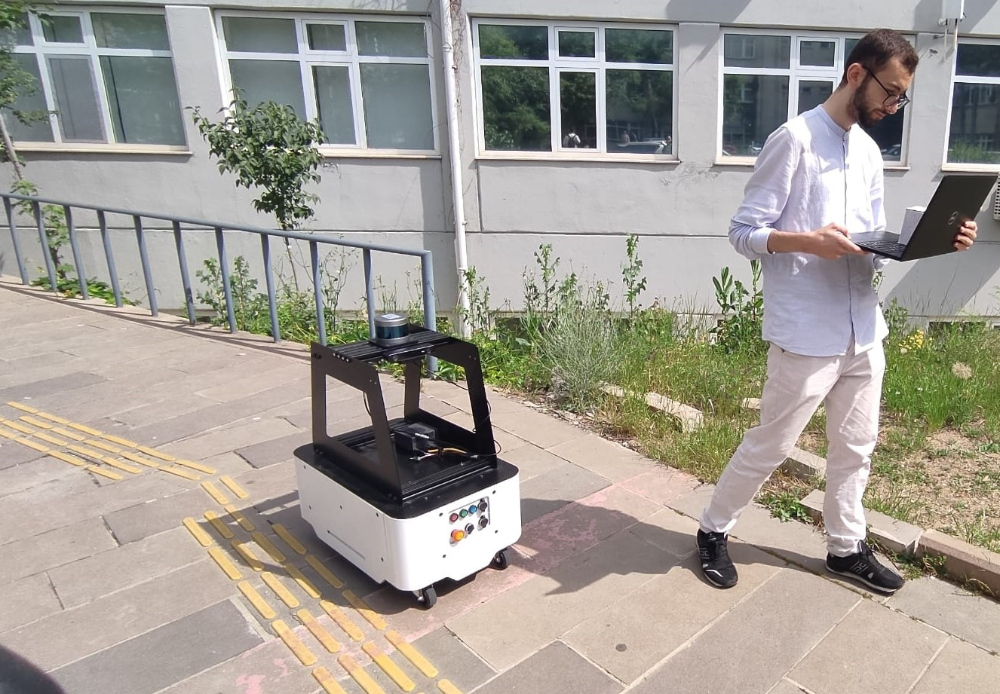

Giriş
Put introduction in here.
Proje Kapsamında Mobil Robota Yaptığımız İyileştirmeler
Fiziksel İyileştirmeler
Yazılımsal İyileştirmeler
Robot İçi Kablo Düzenlemeleri
Başlangıçta mobil robotların içindeki kablolar hareket halindeyken tekerleklere dolanıyor veya yerde sürükleniyordu. Ekip daha sonra kabloları güvenli bir şekilde yerlerinde kalacak şekilde titizlikle düzenleyerek bu sorunu çözdü ve robotun verimliliğini ve ömrünü önemli ölçüde artırdı.
Batarya ölçen parça
Daha önce, mobil robot için kalan pil ömrünü kontrol etmenin veya Wi-Fi bağlantılarını yönetmenin bir yolu yoktu ve bu da beklenmedik güç kayıplarına ve bağlantı sorunlarına yol açıyordu. Bu sorunu çözmek için ekip, yerinde hızlı kontrol sağlayan küçük bir ekranla donatılmış bir Arduino aracı geliştirdi ve kurdu. Bu araç yalnızca kalan pili izlemekle kalmıyor, aynı zamanda mevcut Wi-Fi ağını da görüntülüyor, erişilebilen mevcut ağları gösteriyor ve kullanıcıların ağlar arasında sorunsuz bir şekilde geçiş yapmasına olanak tanıyor. Bu geliştirme, robotun güvenilirliğini ve operasyonel verimliliğini önemli ölçüde artırır.

Güç Anahtarı Değiştirme
Bazı kablolar, mobil robota motorların ana güç kaynağından bağımsız olarak açılıp kapanmasına olanak tanıyan yeni bir güç anahtarı eklenecek şekilde değiştirildi. Bu değişiklikten önce motorların kapatılıp açılması gerektiğinde robotun tamamının kapatılması gerekiyordu. Artık bu anahtarla sadece motorların gücü kesiliyor ve süreç çok daha verimli hale geliyor. Bu iyileştirme, tekerlekleri kontrol etmek için gerekli olan motorların robotun genel işlevselliğini bozmadan yönetilebilmesi nedeniyle daha sorunsuz çalışma ve bakım sağlar.
Maplar arası navigasyon
Buraya bir sürü saçmalık yazıp bir demo videosu koyabiliriz.
About Mobile Robot Hardware
Installed sensors:
- NVIDIA Jetson AGX Orin Developer Kit
- LIDAR
- Zed 2
Galery
 






